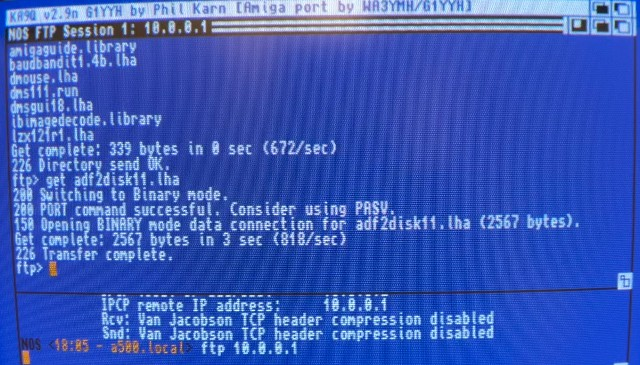

The Solana Vanishing Act
The Solana Vanishing Act
AmigaNOS (or AmigaTCP or KA9Q) is as far as I know the only TCP/IP stack that works on Kickstart 1.3, besides Commodore's AS225 stack (and probably just it's r1 version), made for the A2065 Zorro-II Ethernet card for Amiga 2000/3000/4000. By the time the Internet became more widespread, Kickstart 2.0 was already out and the more advanced applications all use the capabilities of the newer OS.
AmigaNOS is the port of the TCP/IP stack originally written by Phil Karn (callsign: KA9Q) and was intended for amateur packet radio users. As it's tiny and was written in C, it got ported to many systems. The Amiga port was done by John Heaton.
Even though there is an extensive original documentation. The Amiga version was maintained by different people over the years, so there are different archives in circulation with different features, folder structure (or the lack of it) and a confusing scattered documentation.
AmigaNOS v870227.5 - Archive: AmigaTCP.lha (AmiNet) -> Uploaded in 1989. An early version from the Fish collection. It lacks many features. No PPP support and the archive contains no documentation and folder structure for the configurations, but it includes the source code.
AmigaNOS v2.9i - Archive AmigaNOS-2.9i.lha (Funet FTP) -> The full archive, that contains the configuration files, folders and documentation, but this version has only SLIP support, so PPP won't work with it. I uploaded it to my cloud storage, so here is a mirror.
AmigaNOS v2.9n - Archive: anos29m.lha (AmiNet) -> Uploaded in 1993, it's a newer version with SLIP and PPP support. It looks for the NOS-startup script in the AmigaNOS/tcpip/slip directory by default and if a NOS-dialup script is present, it will try to run that first (autodial is on). The archive contains just the executable, nothing else. Yes, the archive name says anos29m and the binary in it 2.9n, it's weird.
AmigaNOS v2.9k - Archive: AmigaNOSGW6.lzh (AmiNet) -> It's the latest executable done by Graham Walter called AmigaNOSGW. It has SLIP and PPP, Van Jacobson IP header compression support and a partial BSD socket interface impelemtation via an Amiga message port, that allows the use of a Gopher client with AmigaGuide as a browser. It's based on AmigaNOS_v2.9n, but it looks for the NOS-startup script in the same directory where it runs by default. I'm using this version in this guide.
There is an archive called AmigaNOS-Tools.lha (AmiNet) that contains some AREXX utilities targetted for radio amateur users.
I made a "complete" AmigaNOS archive, which combines the different archives.
You can download the complete archive here:
1. Download AmigaNOS-Complete.lha
2. Unpack the archive to a location of your choice. For example your Workbench disk (sys:)
3. Edit your s:startupII (or startup-sequence) script and add the following section:
;Setup AmigaNOS assign nos: sys:AmigaNOS assign tcpip: nos:tcpip assign slip: nos:tcpip/slip
4. Copy the files from AmigaNOS/c to your c: directory
5. Copy the files from AmigaNOS/Libs to your libs: directory.
6. Reboot, so the assigns are set
Note: You can put the contents of the AmigaNOS-Complete archive on an empty floppy disk (excluding the documentation, the sources and AmigaGuide, so it fits on a single floppy) and use it on a floppy only system after booting from a Workbench 1.3 disk. Add the necessary assigns manually. Having two floppy drives is really recommended in this scenario.
Now you have AmigaNOS installed. The AmigaNOS/TCPIP directory contains a script called NOS-startup. The contents of this file gets executed when you start AmigaNOS (if you don't specify another directory where to look for the script with the -d argument ). You can also start AmigaNOS without a script, but then you'll need to enter the commands to configure the network connection manually every time.
Open the AmigaNOS/TCPIP/NOS-Startup script in a text editor and change the configuration according to your needs and your network. My script has the following settings:
autodial off ip address 10.0.0.2 hostname a500 attach asy serial.device 0 ppp ppp0 4096 1500 9600c route add default ppp0 10.0.0.1 domain addserver 10.0.0.1 start echo start ping #start telnet #start ftp #start ttylink echo accept ppp activeopen ppp0 ifconfig ppp0 ppp status ppp0 #domain trace on
In the first line we turn off autodial, so that the NOS-Dial script is not executed. We then set the IP address of the Amiga. I'm using 10.0.0.2 as the Amiga's address and 10.0.0.1 will be the RaspberryPi's PPP interface address. It's arbitrary, you can pick something else, just be consistent and use the same addresses on the Linux side. In theory you can even use unique IPs from the range of your main local network too (which is 192.168.10.x in my case), but it's a good idea to separate the two. The second line sets the hostname of the Amiga. The next important line is the attach, which configures the interface. AmigaNOS supports SLIP and PPP, I'm using PPP in this example. The command looks like this:
attach asy <device> <unit> <mode> <if name> <buffer size> <MTU> <baud>The values I set:
With "route add" command we add the IP address of the RaspberryPi as the default route for the ppp0 interface. We set DNS servers to the Raspberry Pi's ppp0 interface. Then we start some services. These are services that we provide from the Amiga, so they're the ones where the Amiga will act as a server and accept incoming packets. Then we activate the ppp connection and print the interface settings and the status of the connection. If you want to enable DNS traces, you can uncomment the last line.
Note: The ppp command has two modes: activeopen and passiveopen. Which one to use depends on how the pppd on the Linux side is configured (see the passive and silent parameters in the Linux pppd config file below).
Open the AmigaNOS/TCPIP/domains.txt file in a text editor and replace the contents of it with the following line:
<hostname of your LinuxPC> IN A 10.0.0.1
Note: There is an ftpusers file, which contains the username, password, path and permission for a user connecting to the Amiga's FTP server. You can configure it this way:
<user> <password> <directory> <permission>
Example:
amiga amiga123 TCPIP:PUBLIC 1
It's time to configure the Linux side. I suggest following my Amiga-PC PPP configuration guide, where I set up the PPP connection between a RaspberryPi and a Workbench 3.1 running the Miami TCP/IP stack. For AmigaNOS however, we're going to need slightly different pppd settings, so set the following configuration in the /etc/ppp/amiga config file:
debug nodetach # Serial device /dev/ttyUSB0 # Speed of the serial line, this is probably maximum unless you have # a serial board (set the same as on the Amiga side!) #2400 #19200 9600 #38400 #57600 #115200 # Require the peer to authenticate itself before allowing network # packets to be sent or received. noauth # Don't use the modem control lines. local # Local and remote IP addresses #192.168.10.201:192.168.10.202 10.0.0.1:10.0.0.2 # Set the interface netmask netmask 255.255.255.255 # Enables the "passive" option in the LCP. With this option, pppd will # attempt to initiate a connection; if no reply is received from the # peer, pppd will then just wait passively for a valid LCP packet from # the peer (instead of exiting, as it does without this option). passive # Add an entry to this system's ARP [Address Resolution Protocol] # table with the IP address of the peer and the Ethernet address of this # system. proxyarp # Do not exit after a connection is terminated; instead try to reopen # the connection. persist # Disable Address/Control compression negotiation (use default, i.e. # address/control field disabled). -ac # Disable protocol field compression negotiation (use default, i.e. # protocol field compression disabled). -pc # Disable asyncmap negotiation (use the default asyncmap, i.e. escape # all control characters). #-am # Disable negotiation of Van Jacobson style IP header compression (use # default, i.e. no compression). -vj # Disable CCP compression and IPv6CP nobsdcomp noccp noipv6
As you can see, there is a slight difference compared to the guide for Miami, for AmigaNOS we're setting the baud rate to 9600, and disabling a bunch of compression negotiation. The rest of the Amiga-PC PPP configuration guide for the Raspberry Pi side to set up the IP forwarding and the pppd as a service pretty much still applies.
This might not be strictly necessary as in theory DNS requests should also be forwarded if you enabled IP forwarding and set up the IP tables rules correctly, but for me for some reason while it worked well with Miami, it didn't work with AmigaNOS. I could see in tcpdump that the Amiga sent the DNS request to the Raspberry Pi, but it couldn't process it:
18:00:53.311872 IP 10.0.0.2.1024 > 10.0.0.1.domain: 268+ A? www.google.com. (32) 18:00:53.312034 IP 10.0.0.1 > 10.0.0.2: ICMP 10.0.0.1 udp port domain unreachable, length 68
The solution was to install Dnsmasq and force it to forward all DNS requests to the router. Here is how to do it.
Install Dnsmasq:
sudo apt install dnsmasq
Open it's configuration file:
sudo nano /etc/dnsmasq.conf
Add the following lines:
interface=ppp0 listen-address=10.0.0.1 # Raspberry Pi's address server=192.168.10.1 # Forward DNS queries to your router no-resolv # Prevent dnsmasq from using /etc/resolv.conf
Restart Dnsmasq
sudo systemctl restart dnsmasq
Once the ppp interface and dnsmasq is up and running on the Raspberry Pi, check the routing table, it should now contain a route for the ppp0 interface:
route -n Kernel IP routing table Destination Gateway Genmask Flags Metric Ref Use Iface 0.0.0.0 192.168.10.1 0.0.0.0 UG 202 0 0 eth0 10.0.0.2 0.0.0.0 255.255.255.255 UH 0 0 0 ppp0 192.168.10.0 0.0.0.0 255.255.255.0 U 202 0 0 eth0
We can now start AmigaNOS!
To start AmigaNOS either click on the icon of the binary or start it from the CLI:
cd tcpip: amiganos
An AmigaNOS commandline window will open and it should execute the settings from the nos-startup script, resulting in a ppp status command in the end. Wait a few seconds and type in the "ppp status ppp0" command again, to see if the connection is ready.
Note: If you want to use a different startup script, you can specify a different folder for the script location with the -d argument. If the autodial parameter is set to ON, AmigaNOS will try to exectute the NOS-Dial script instead.
Now you should be able to use both FTP and Telnet towards the RaspberryPi's IP address. Type:
telnet 10.0.0.1
or
ftp 10.0.0.1

Try ping-ing an exteral domain name:
ping google.com
Connect to Aminet:
ftp ftp.aminet.net
By starting telnet or ftp, a new session window will open. You can have multiple sessions in AmigaNOS. To go back to the command-line window press the Clrl + ^ key. It will switch back to the command-line window, where you can start another session, or list and manage the running sessions with the session (or "se" for short) command. To stop an FTP session for example you can use:
abort <session #>
To see what commands are available, type:
?
For help on a particular command, type the command name before the "?". Example:
domain ?
For even more help, use the help <command>. Example:
help domain
This will open the relevant section for that command from the documentation. See the full documentation for more details.
To exit a running Telnet session, type "exit" in the Telnet terminal. To quit the FTP client, type "quit" in the FTP window. To stop AmigaNOS, type "exit" in the command-line window.
Graham Walter's AmigaNOS (AmigaNOSGW6, v2.9k) has been extended with the possibility to run a Gopher client and use AmigaGuide as a "browser". If you have AmigaGuide installed (you copied the amigaguide binary from AmigaNOS:C to C: and AmigaNOS:Libs to Libs:), you can issue the command from the AmigaNOS commandline:
client gopher
The Gopher client will start and open a new window with AmigaGuide.
Click the Enter Gopher World button and select an address from the list. The list is stored in the tcpip:spool/gopher/bookmarks file. You can edit it to add new addresses or replace old, broken ones.
Enjoy browsing the Gopherspace on your Amiga 500!
Even though SLIP was pretty much replaced by PPP for direct point-to-point connections, it's possible to use SLIP as well.
In the AmigaNOS NOS-startup script you have to change just a few things. Specify slip in the attach command, change the interface name to sl0 and the MTU size to 576, remove the letter c from end of the baud value. Update the ppp0 interface name in the route commands with sl0, then remove the last two ppp commands. The changed commands:
attach asy serial.device 0 slip sl0 4096 576 9600 route add 10.0.0.1 sl0 route default sl0 10.0.0.1
First, bring down the ppp0 interface if you configured it before:
sudo systemctl stop ppp-amiga
Then enable SLIP with:
sudo modprobe slip
Now you can configure it with:
sudo slattach -v -d -p slip -s 9600 /dev/ttyUSB0 &
Where 9600 is the baud rate and /dev/ttyUSB0 is the serial device in case you're using a USB-To-Serial adapter.
Running the command should give the following output:
slattach: tty_open: looking for lock slattach: tty_open: trying to open /dev/ttyUSB0 slattach: tty_open: /dev/ttyUSB0 (fd=3) slattach: tty_set_speed: 9600 slattach: tty_set_databits: 8 slattach: tty_set_stopbits: 1 slattach: tty_set_parity: N slip started on /dev/ttyUSB0 interface sl0
Now we can configure the IP addresses for the sl0 interface and bring it up:
sudo ifconfig sl0 10.0.0.1 pointopoint 10.0.0.2 up
Set the MTU value to match what we configured in AmigaNOS:
sudo ifconfig sl0 mtu 576
What's left to do now is to configure the forwarding between the wlan0 (wifi) interface and the sl0 (slip) interface:
sudo iptables -A FORWARD -o wlan0 -i sl0 -s 10.0.0.0/24 -m conntrack --ctstate NEW -j ACCEPT sudo iptables -A FORWARD -m conntrack --ctstate ESTABLISHED,RELATED -j ACCEPT sudo iptables -A POSTROUTING -t nat -j MASQUERADE